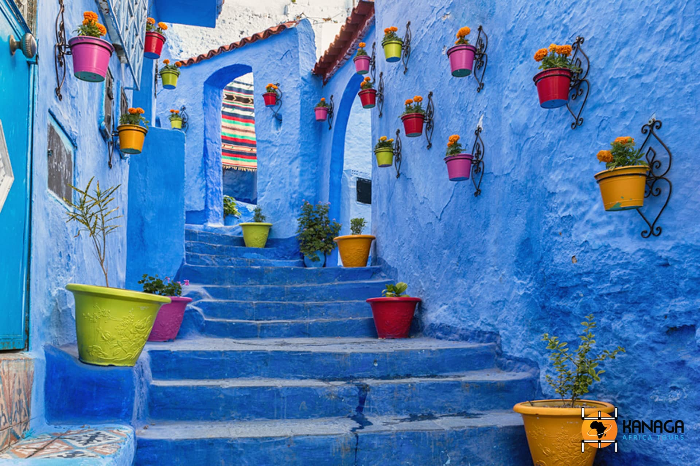
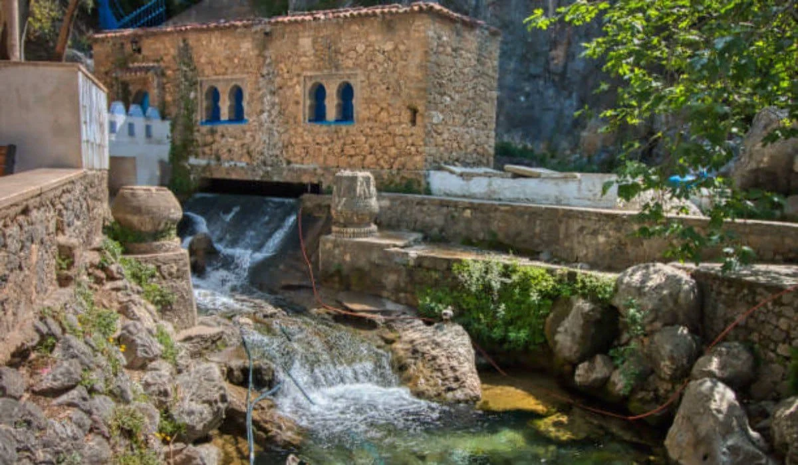
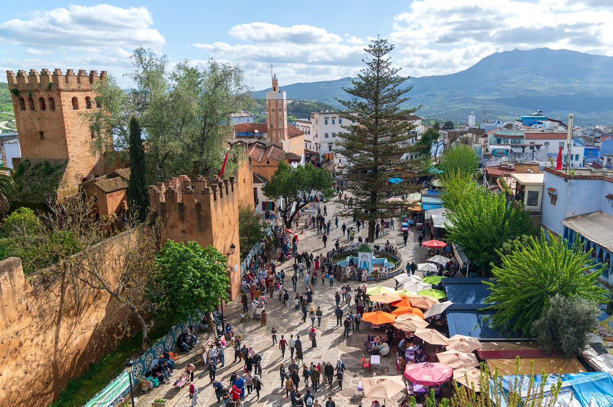
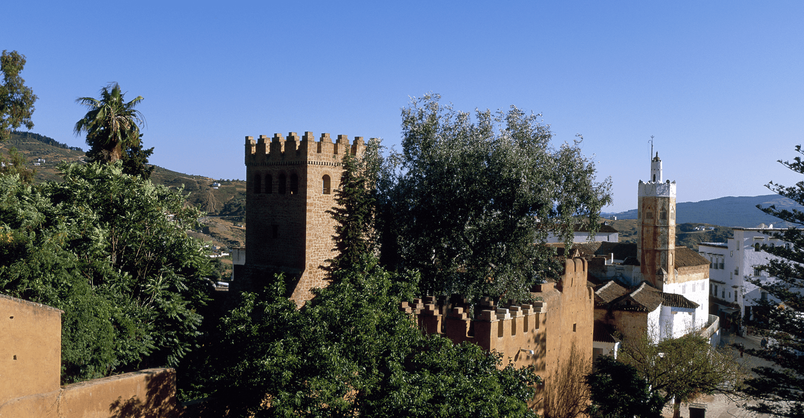
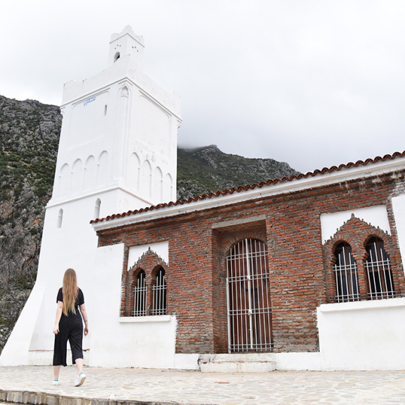
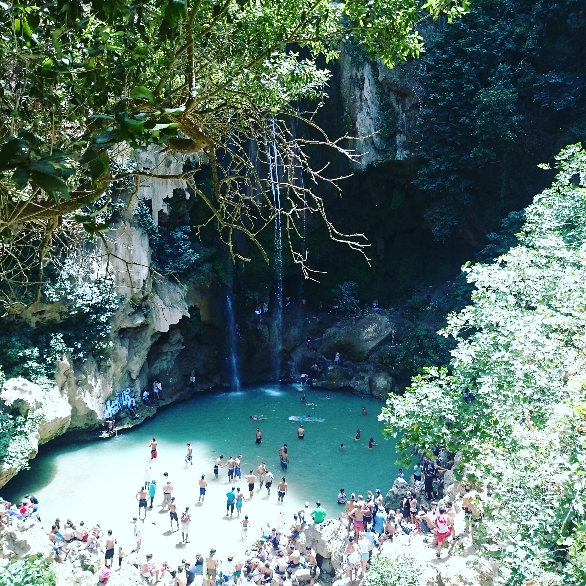

À propos de Chefchaouen
Chefchaouen est une ville emblématique du Nord du Maroc, connue pour ses façades bleues qui créent une atmosphère magique. Fondée en 1471, elle se situe dans les montagnes du Rif et attire des visiteurs du monde entier grâce à son ambiance spirituelle, ses paysages naturels et son patrimoine culturel riche.
Faits rapides
- Population: ~45k
- Région: Tanger-Tétouan-Al Hoceïma
- Altitude: 564 m
- Climat: Méditerranéen
Culture
Chefchaouen est profondément marquée par la culture rifaine, andalouse et amazighe. Ses traditions artisanales, ses ruelles peintes en bleu et son ambiance spirituelle font de la ville un lieu unique au Maroc.
Souvent appelée « Chaouen », elle est aussi connue pour la fabrication de djellabas, couvertures, et artisanat local.
Artisanat
Tissage traditionnel, laine, djellabas, poterie.
Musique
Musique andalouse, rifaine et spirituelle.
Paysages
Montagnes du Rif, cascades, randonnée.
Gastronomie
Fromages locaux, tajines, cuisine du Rif.
Sites incontournables

La Médina Bleue
Ruelles peintes en bleu, architecture andalouse et ambiance unique.

Ras El Ma
Source d’eau naturelle très populaire, idéale pour se rafraîchir.

Place Outa El Hammam
Cœur vivant de la ville, cafés, restaurants et ambiance locale.

La Kasbah
Ancienne forteresse du XVe siècle avec musée et jardin intérieur.

Mosquée Espagnole
Superbe point de vue sur toute la médina, surtout au coucher du soleil.

Cascades d’Akchour
Un paradis naturel pour les amateurs de randonnée et de nature.